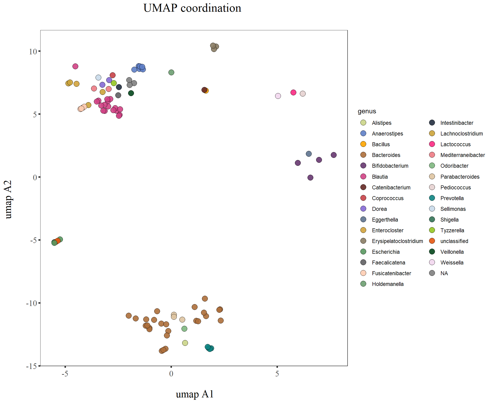

Phylogenetic_strain_selection
KiseokUchicago
2021-06-16
Last updated: 2021-06-18
Checks: 7 0
Knit directory: Kp_suppression/
This reproducible R Markdown analysis was created with workflowr (version 1.6.2). The Checks tab describes the reproducibility checks that were applied when the results were created. The Past versions tab lists the development history.
Great! Since the R Markdown file has been committed to the Git repository, you know the exact version of the code that produced these results.
Great job! The global environment was empty. Objects defined in the global environment can affect the analysis in your R Markdown file in unknown ways. For reproduciblity it’s best to always run the code in an empty environment.
The command set.seed(20210616) was run prior to running the code in the R Markdown file. Setting a seed ensures that any results that rely on randomness, e.g. subsampling or permutations, are reproducible.
Great job! Recording the operating system, R version, and package versions is critical for reproducibility.
Nice! There were no cached chunks for this analysis, so you can be confident that you successfully produced the results during this run.
Great job! Using relative paths to the files within your workflowr project makes it easier to run your code on other machines.
Great! You are using Git for version control. Tracking code development and connecting the code version to the results is critical for reproducibility.
The results in this page were generated with repository version 2e96eca. See the Past versions tab to see a history of the changes made to the R Markdown and HTML files.
Note that you need to be careful to ensure that all relevant files for the analysis have been committed to Git prior to generating the results (you can use wflow_publish or wflow_git_commit). workflowr only checks the R Markdown file, but you know if there are other scripts or data files that it depends on. Below is the status of the Git repository when the results were generated:
Ignored files:
Ignored: .Rhistory
Ignored: .Rproj.user/
Untracked files:
Untracked: UMAP_100centroid_kmeans.pdf
Untracked: UMAP_all.pdf
Untracked: UMAP_clustering_kmeans.pdf
Untracked: UMAP_umapclustering_100.pdf
Untracked: UMAP_umapclustering_20.pdf
Untracked: data/Biobank_align_mafft.fasta.mldist.tsv
Untracked: data/Biobank_align_mafft.fasta.treefile.nwk
Untracked: data/Biobank_align_mafft.fasta.treefile_rooted.nwk
Untracked: data/biobank.umap.16sSeqs.csv
Untracked: input_for_fasta_conversion.txt
Note that any generated files, e.g. HTML, png, CSS, etc., are not included in this status report because it is ok for generated content to have uncommitted changes.
These are the previous versions of the repository in which changes were made to the R Markdown (analysis/Phylogenetic_strain_selection.Rmd) and HTML (docs/Phylogenetic_strain_selection.html) files. If you’ve configured a remote Git repository (see ?wflow_git_remote), click on the hyperlinks in the table below to view the files as they were in that past version.
| File | Version | Author | Date | Message |
|---|---|---|---|---|
| Rmd | 2e96eca | KiseokUchicago | 2021-06-18 | almost |
| html | b74f2e4 | KiseokUchicago | 2021-06-17 | Build site. |
| Rmd | a223d63 | KiseokUchicago | 2021-06-17 | working |
| html | fe0d21b | KiseokUchicago | 2021-06-17 | Build site. |
| Rmd | 309d09b | KiseokUchicago | 2021-06-17 | initiate |
Phylogenetic tree construction
Kiseok Lee
# libraries
library(dplyr)
library(ggplot2)
library(RColorBrewer)
library(vegan)
library(tidyverse)
library(magrittr)
library(readxl)
library(reshape2)
library(gtools)
library(devtools)
library(openxlsx)
library(ape)
## theme for ggplot
mytheme <- theme_bw() +
theme(plot.title = element_text(size = 19,hjust = 0.5, family="serif")) +
theme(axis.title.x = element_text(size = 17,hjust = 0.5, family="serif")) +
theme(axis.title.y = element_text(size = 17,hjust = 0.5, family="serif")) +
theme(axis.text.x = element_text(hjust = 0.5, vjust=0.3,size=13, family="serif"))+
theme(axis.text.y = element_text(size=10, family="serif"))+
theme(panel.grid.major = element_blank()) +
theme(panel.grid.minor = element_blank(),panel.background=element_blank(),panel.border=element_blank(),plot.background=element_blank()) +
theme(axis.ticks = element_line(size = 1.1))
mytheme_2d <- theme_bw() +
theme(plot.title = element_text(size = 19,hjust = 0.5, family="serif")) +
theme(axis.title.x = element_text(size = 17,hjust = 0.5, family="serif")) +
theme(axis.title.y = element_text(size = 17,hjust = 0.5, family="serif")) +
theme(axis.text.x = element_text(hjust = 0.5, vjust=0.3,size=13, family="serif"))+
theme(axis.text.y = element_text(size=13, family="serif"))+
theme(panel.grid.major = element_blank()) +
theme(panel.grid.minor = element_blank(),panel.background=element_blank(),plot.background=element_blank()) +
theme(axis.ticks = element_line(size = 1.1))
# color collection
my_color_collection <- c(
"#CBD588", "#5F7FC7", "orange", "#AD6F3B", "#673770",
"#D14285", "#652926", "#C84248", "#8569D5", "#5E738F",
"#D1A33D", "#8A7C64", "#599861","#616163", "#FFCDB2",
"#6D9F71", "#242F40",
"#CCA43B", "#F92A82", "#ED7B84", "#7EB77F",
"#DEC4A1", "#E5D1D0", '#0E8482', '#C9DAEA', '#337357',
'#95C623', '#E55812', '#04471C', '#F2D7EE', '#D3BCC0',
'#A5668B', '#69306D', '#0E103D', '#1A535C', '#4ECDC4',
'#F7FFF7', '#FF6B6B', '#FFE66D', '#6699CC', '#FFF275',
'#FF8C42', '#FF3C38', '#A23E48', '#000000', '#CF5C36',
'#EEE5E9', '#7C7C7C', '#EFC88B', '#2E5266', '#6E8898',
'#9FB1BC', '#D3D0CB', '#E2C044', '#5BC0EB', '#FDE74C',
'#9BC53D', '#E55934', '#FA7921', "#CD9BCD", "#508578", "#DA5724")1. Data input and pre-processing for phylogenetic tree construction
df_Biobank <- read.csv('data/biobank.umap.16sSeqs.csv')
dim(df_Biobank)[1] 850 13colnames(df_Biobank) [1] "seq_id" "umapA1" "umapA2" "tiplabel" "msk_id"
[6] "length_bp" "phylum" "class" "order" "family"
[11] "genus" "species" "nuc_sequence"head(df_Biobank) seq_id umapA1 umapA2 tiplabel msk_id length_bp
1 210119-DFI.3.32 -5.2351763 -4.934942 JGLPCKFE_0 DFI.3.32 1443
2 210119-DFI.3.61 -0.8318949 -11.305224 KFNOGCAE_0 DFI.3.61 1525
3 210119-DFI.3.86.2 0.2015703 -11.130230 MCNCDFEJ_0 DFI.3.86 1527
4 210119-DFI.4.132 1.4983046 -10.842872 EOGPJFFH_0 DFI.4.132 1528
5 210119-DFI.4.155 -1.4185973 8.737071 IKKMFIBH_0 DFI.4.155 1529
6 210119-DFI.4.81 1.4445846 -10.807266 GCOEKEKI_0 DFI.4.81 1124
phylum class order family
1 Proteobacteria Gammaproteobacteria Enterobacterales Enterobacteriaceae
2 Bacteroidetes Bacteroidia Bacteroidales Bacteroidaceae
3 Bacteroidetes Bacteroidia Bacteroidales Tannerellaceae
4 Bacteroidetes Bacteroidia Bacteroidales Bacteroidaceae
5 Firmicutes Clostridia Clostridiales Lachnospiraceae
6 Bacteroidetes Bacteroidia Bacteroidales Bacteroidaceae
genus species
1 Escherichia Escherichia fergusonii
2 Bacteroides Bacteroides thetaiotaomicron
3 Parabacteroides Parabacteroides johnsonii
4 Bacteroides Bacteroides dorei
5 Anaerostipes Anaerostipes hadrus
6 Bacteroides Bacteroides vulgatus
nuc_sequence
1 CGAGTGGCGGACGGGTGAGTAATGTCTGGGAAACTGCCTGATGGAGGGGGATAACTACTGGAAACGGTAGCTAATACCGCATAACGTCGCAAGACCAAAGAGGGGGACCTTCGGGCCTCTTGCCATCGGATGTGCCCAGATGGGATTAGCTAGTAGGTGGGGTAACGGCTCACCTAGGCGACGATCCCTAGCTGGTCTGAGAGGATGACCAGCCACACTGGAACTGAGACACGGTCCAGACTCCTACGGGAGGCAGCAGTGGGGAATATTGCACAATGGGCGCAAGCCTGATGCAGCCATGCCGCGTGTATGAAGAAGGCCTTCGGGTTGTAAAGTACTTTCAGCGGGGAGGAAGGGAGTAAAGTTAATACCTTTGCTCATTGACGTTACCCGCAGAAGAAGCACCGGCTAACTCCGTGCCAGCAGCCGCGGTAATACGGAGGGTGCAAGCGTTAATCGGAATTACTGGGCGTAAAGCGCACGCAGGCGGTTTGTTAAGTCAGATGTGAAATCCCCGGGCTCAACCTGGGAACTGCATCTGATACTGGCAAGCTTGAGTCTCGTAGAGGGGGGTAGAATTCCAGGTGTAGCGGTGAAATGCGTAGAGATCTGGAGGAATACCGGTGGCGAAGGCGGCCCCCTGGACGAAGACTGACGCTCAGGTGCGAAAGCGTGGGGAGCAAACAGGATTAGATACCCTGGTAGTCCACGCCGTAAACGATGTCGACTTGGAGGTTGTGCCCTTGAGGCGTGGCTTCCGGAGCTAACGCGTTAAGTCGACCGCCTGGGGAGTACGGCCGCAAGGTTAAAACTCAAATGAATTGACGGGGGCCCGCACAAGCGGTGGAGCATGTGGTTTAATTCGATGCAACGCGAAGAACCTTACCTGGTCTTGACATCCACGGAAGTTTTCAGAGATGAGAATGTGCCTTCGGGAACCGTGAGACAGGTGCTGCATGGCTGTCGTCAGCTCGTGTTGTGAAATGTTGGGTTAAGTCCCGCAACGAGCGCAACCCTTATCCTTTGTTGCCAGCGGTCCGGCCGGGAACTCAAAGGAGACTGCCAGTGATAAACTGGAGGAAGGTGGGGATGACGTCAAGTCATCATGGCCCTTACGACCAGGGCTACACACGTGCTACAATGGCGCATACAAAGAGAAGCGACCTCGCGAGAGCAAGCGGACCTCATAAAGTGCGTCGTAGTCCGGATTGGAGTCTGCAACTCGACTCCATGAAGTCGGAATCGCTAGTAATCGTGGATCAGAATGCCACGGTGAATACGTTCCCGGGCCTTGTACACACCGCCCGTCACACCATGGGAGTGGGTTGCAAAAGAAGTAGGTAGCTTAACCTTCGGGAGGGCGCTTACCACTTTGTGATTCATGACTGGGGTGAAGTCGTAACAAGGTAACCGTAGGGGAACCTGCGGTTGGATCACCTCCTT
2 ATGAAGAGTTTGATCCTGGCTCAGGATGAACGCTAGCTACAGGCTTAACACATGCAAGTCGAGGGGCAGCATTTCAGTTTGCTTGCAAACTGGAGATGGCGACCGGCGCACGGGTGAGTAACACGTATCCAACCTGCCGATAACTCGGGGATAGCCTTTCGAAAGAAAGATTAATACCCGATGGTATAATTAGACCGCATGGTCTTGTTATTAAAGAATTTCGGTTATCGATGGGGATGCGTTCCATTAGGCAGTTGGTGAGGTAACGGCTCACCAAACCTTCGATGGATAGGGGTTCTGAGAGGAAGGTCCCCCACATTGGAACTGAGACACGGTCCAAACTCCTACGGGAGGCAGCAGTGAGGAATATTGGTCAATGGGCGCAGGCCTGAACCAGCCAAGTAGCGTGAAGGATGACTGCCCTATGGGTTGTAAACTTCTTTTATATGGGAATAAAGTTTTCCACGTGTGGAATTTTGTATGTACCATATGAATAAGGATCGGCTAACTCCGTGCCAGCAGCCGCGGTAATACGGAGGATCCGAGCGTTATCCGGATTTATTGGGTTTAAAGGGAGCGTAGGTGGACAGTTAAGTCAGTTGTGAAAGTTTGCGGCTCAACCGTAAAATTGCAGTTGATACTGGCTGTCTTGAGTACAGTAGAGGTGGGCGGAATTCGTGGTGTAGCGGTGAAATGCTTAGATATCACGAAGAACTCCGATTGCGAAGGCAGCTCACTGGACTGCAACTGACACTGATGCTCGAAAGTGTGGGTATCAAACAGGATTAGATACCCTGGTAGTCCACACAGTAAACGATGAATACTCGCTGTTTGCGATATACAGTAAGCGGCCAAGCGAAAGCATTAAGTATTCCACCTGGGGAGTACGCCGGCAACGGTGAAACTCAAAGGAATTGACGGGGGCCCGCACAAGCGGAGGAACATGTGGTTTAATTCGATGATACGCGAGGAACCTTACCCGGGCTTAAATTGCATTTGAATATATTGGAAACAGTATAGTCGTAAGACAAATGTGAAGGTGCTGCATGGTTGTCGTCAGCTCGTGCCGTGAGGTGTCGGCTTAAGTGCCATAACGAGCGCAACCCTTATCTTTAGTTACTAACAGGTCATGCTGAGGACTCTAGAGAGACTGCCGTCGTAAGATGTGAGGAAGGTGGGGATGACGTCAAATCAGCACGGCCCTTACGTCCGGGGCTACACACGTGTTACAATGGGGGGTACAGAAGGCAGCTACCTGGTGACAGGATGCTAATCCCAAAAGCCTCTCTCAGTTCGGATCGAAGTCTGCAACCCGACTTCGTGAAGCTGGATTCGCTAGTAATCGCGCATCAGCCATGGCGCGGTGAATACGTTCCCGGGCCTTGTACACACCGCCCGTCAAGCCATGAAAGCCGGGGGTACCTGAAGTACGTAACCGCAAGGAGCGTCCTAGGGTAAAACTGGTAATTGGGGCTAAGTCGTAACAAGGTAGCCGTACCGGAAGGTGCGGCTGGAACACCTCCTT
3 CGAAGAGTTTGATCCTGGCTCAGGATGAACGCTAGCGACAGGCTTAACACATGCAAGTCGAGGGGCAGCATGGTAGGTAGCAATACTTATTGATGGCGACCGGCGCACGGGTGAGTAACGCGTATGCAACTTACCTATCAGAGGAGGATAGCCCGGCGAAAGTCGGATTAATACTCCATAAAACAGGGATCCCGCATGGGAATATTTGTTAAAGATTCATCGCTGATAGATAGGCATGCGTTCCATTAGGCAGTTGGCGGGGTAACGGCCCACCAAACCGACGATGGATAGGGGTTCTGAGAGGAAGGTCCCCCACATTGGTACTGAGACACGGACCAAACTCCTACGGGAGGCAGCAGTGAGGAATATTGGTCAATGGCCGAGAGGCTGAACCAGCCAAGTCGCGTGAAGGATGAAGGATCTATGGTTTGTAAACTTCTTTTATAGGGGAATAAAGTGTGGGACGTGTCCCATTTTGTATGTACCCTATGAATAAGCATCGGCTAACTCCGTGCCAGCAGCCGCGGTAATACGGAGGATGCGAGCGTTATCCGGATTTATTGGGTTTAAAGGGTGCGTAGGTGGTAATTTAAGTCAGCGGTGAAAGTTTGTGGCTCAACCATAAAATTGCCGTTGAAACTGGGTTACTTGAGTGTGTTTGAGGTAGGCGGAATGCGTGGTGTAGCGGTGAAATGCATAGATATCACGCAGAACTCCAATTGCGAAGGCAGCTTACTAAACCATAACTGACACTGAAGCACGAAAGCGTGGGTATCAAACAGGATTAGATACCCTGGTAGTCCACGCAGTAAACGATGATTACTAGGAGTTTGCGATAGACAGTAAGCTCTACAGCGAAAGCGTTAAGTAATCCACCTGGGGAGTACGCCGGCAACGGTGAAACTCAAAGGAATTGACGGGGGCCCGCACAAGCGGAGGAACATGTGGTTTAATTCGATGATACGCGAGGAACCTTACCCGGGTTTGAACGTAGTCAGACCGACCTTGAAAGAGGTCTTCTAGCAATAGCTGATTACGAGGTGCTGCATGGTTGTCGTCAGCTCGTGCCGTGAGGTGTCGGCTTAAGTGCCATAACGAGCGCAACCCTTATCACTAGTTACTAACAGGTTAAGCTGAGGACTCTGGTGAGACTGCCAGCGTAAGCTGTGAGGAAGGTGGGGATGACGTCAAATCAGCACGGCCCTTACATCCGGGGCGACACACGTGTTACAATGGCATGGACAAAGGGCAGCTACCTGGCGACAGGATGCTAATCTCTAAACCATGTCTCAGTTCGGATCGGAGTCTGCAACTCGACTCCGTGAAGCTGGATTCGCTAGTAATCGCGCATCAGCCATGGCGCGGTGAATACGTTCCCGGGCCTTGTACACACCGCCCGTCAAGCCATGGGAGCCGGGGGTACCTGAAGTCCGTAACCGCAAGGATCGGCCTAGGGTAAAACTGGTGACTGGGGCTAAGTCGTAACAAGGTAGCCGTACCGGAAGGTGCGGCTGGAACACCTCCTTT
4 ATGAAGAGTTTGATCCTGGCTCAGGATGAACGCTAGCTACAGGCTTAACACATGCAAGTCGAGGGGCAGCATGGTCTTAGCTTGCTAAGGCTGATGGCGACCGGCGCACGGGTGAGTAACACGTATCCAACCTGCCGTCTACTCTTGGCCAGCCTTCTGAAAGGAAGATTAATCCAGGATGGGATCATGAGTTCACATGTCCGCATGATTAAAGGTATTTTCCGGTAGACGATGGGGATGCGTTCCATTAGATAGTAGGCGGGGTAACGGCCCACCTAGTCAACGATGGATAGGGGTTCTGAGAGGAAGGTCCCCCACATTGGAACTGAGACACGGTCCAAACTCCTACGGGAGGCAGCAGTGAGGAATATTGGTCAATGGGCGATGGCCTGAACCAGCCAAGTAGCGTGAAGGATGACTGCCCTATGGGTTGTAAACTTCTTTTATAAAGGAATAAAGTCGGGTATGCATACCCGTTTGCATGTACTTTATGAATAAGGATCGGCTAACTCCGTGCCAGCAGCCGCGGTAATACGGAGGATCCGAGCGTTATCCGGATTTATTGGGTTTAAAGGGAGCGTAGATGGATGTTTAAGTCAGTTGTGAAAGTTTGCGGCTCAACCGTAAAATTGCAGTTGATACTGGATGTCTTGAGTGCAGTTGAGGCAGGCGGAATTCGTGGTGTAGCGGTGAAATGCTTAGATATCACGAAGAACTCCGATTGCGAAGGCAGCCTGCTAAGCTGCAACTGACATTGAGGCTCGAAAGTGTGGGTATCAAACAGGATTAGATACCCTGGTAGTCCACACGGTAAACGATGAATACTCGCTGTTTGCGATATACGGCAAGCGGCCAAGCGAAAGCGTTAAGTATTCCACCTGGGGAGTACGCCGGCAACGGTGAAACTCAAAGGAATTGACGGGGGCCCGCACAAGCGGAGGAACATGTGGTTTAATTCGATGATACGCGAGGAACCTTACCCGGGCTTAAATTGCACTCGAATGATCCGGAAACGGTTCAGCTAGCAATAGCGAGTGTGAAGGTGCTGCATGGTTGTCGTCAGCTCGTGCCGTGAGGTGTCGGCTTAAGTGCCATAACGAGCGCAACCCTTGTTGTCAGTTACTAACAGGTGATGCTGAGGACTCTGACAAGACTGCCATCGTAAGATGTGAGGAAGGTGGGGATGACGTCAAATCAGCACGGCCCTTACGTCCGGGGCTACACACGTGTTACAATGGGGGGTACAGAGGGCCGCTACCACGCGAGTGGATGCCAATCCCTAAAACCCCTCTCAGTTCGGACTGGAGTCTGCAACCCGACTCCACGAAGCTGGATTCGCTAGTAATCGCGCATCAGCCACGGCGCGGTGAATACGTTCCCGGGCCTTGTACACACCGCCCGTCAAGCCATGGGAGCCGGGGGTACCTGAAGTGCGTAACCGCGAGGATCGCCCTAGGGTAAAACTGGTGACTGGGGCTAAGTCGTAACAAGGTAGCCGTACCGGAAGGTGCGGCTGGAACACCTCCTT
5 ATGAGAGTTTGATCCTGGCTCAGGATGAACGCTGGCGGCGTGCTTAACACATGCAAGTCGAACGAAACACCTTATTTGATTTTCTTCGGAACTGAAGATTTGGTGATTGAGTGGCGGACGGGTGAGTAACGCGTGGGTAACCTGCCCTGTACAGGGGGATAACAGTCAGAAATGACTGCTAATACCGCATAAGACCACAGCACCGCATGGTGCAGGGGTAAAAACTCCGGTGGTACAGGATGGACCCGCGTCTGATTAGCTGGTTGGTGAGGTAACGGCTCACCAAGGCGACGATCAGTAGCCGGCTTGAGAGAGTGAACGGCCACATTGGGACTGAGACACGGCCCAAACTCCTACGGGAGGCAGCAGTGGGGAATATTGCACAATGGGGGAAACCCTGATGCAGCGACGCCGCGTGAGTGAAGAAGTATCTCGGTATGTAAAGCTCTATCAGCAGGGAAGAAAATGACGGTACCTGACTAAGAAGCCCCGGCTAACTACGTGCCAGCAGCCGCGGTAATACGTAGGGGGCAAGCGTTATCCGGAATTACTGGGTGTAAAGGGTGCGTAGGTGGTATGGCAAGTCAGAAGTGAAAACCCAGGGCTTAACTCTGGGACTGCTTTTGAAACTGTCAGACTAGAGTGCAGGAGAGGTAAGCGGAATTCCTAGTGTAGCGGTGAAATGCGTAGATATTAGGAGGAACATCAGTGGCGAAGGCGGCTTACTGGACTGAAACTGACACTGAGGCACGAAAGCGTGGGGAGCAAACAGGATTAGATACCCTGGTAGTCCACGCCGTAAACGATGAATACTAGGTGTCGGGGCCGTAGAGGCTTCGGTGCCGCAGCCAACGCAGTAAGTATTCCACCTGGGGAGTACGTTCGCAAGAATGAAACTCAAAGGAATTGACGGGGACCCGCACAAGCGGTGGAGCATGTGGTTTAATTCGAAGCAACGCGAAGAACCTTACCTGGTCTTGACATCCTTCTGACCGGTCCTTAACCGGACCTTTCCTTCGGGACAGGAGTGACAGGTGGTGCATGGTTGTCGTCAGCTCGTGTCGTGAGATGTTGGGTTAAGTCCCGCAACGAGCGCAACCCCTATCTTTAGTAGCCAGCATATAAGGTGGGCACTCTAGAGAGACTGCCAGGGATAACCTGGAGGAAGGTGGGGACGACGTCAAATCATCATGCCCCTTATGACCAGGGCTACACACGTGCTACAATGGCGTAAACAGAGGGAAGCAGCCTCGTGAGAGTGAGCAAATCCCAAAAATAACGTCTCAGTTCGGATTGTAGTCTGCAACTCGACTACATGAAGCTGGAATCGCTAGTAATCGCGAATCAGAATGTCGCGGTGAATACGTTCCCGGGTCTTGTACACACCGCCCGTCACACCATGGGAGTCAGTAACGCCCGAAGTCAGTGACCCAACCGTAAGGAGGGAGCTGCCGAAGGCGGGACCGATAACTGGGGTGAAGTCGTAACAAGGTAGCCGTATCGGAAGGTGCGGCTGGATCACCTCCTTT
6 ATGAAGAGTTTGATCCTGGCTCAGGATGAACGCTAGCTACAGGCTTAACACATGCAAGTCGAGGGGCAGCATGGTCTTAGCTTGCTAAGGCCGATGGCGACCGGCGCACGGGTGAGTAACACGTATCCAACCTGCCGTCTACTCTTGGACAGCCTTCTGAAAGGAAGATTAATACAAGATGGCATCATGAGTCCGCATGTTCACATGATTAAAGGTATTCCGGTAGACGATGGGGATGCGTTCCATTAGATAGTAGGCGGGGTAACGGCCCACCTAGTCTTCGATGGATAGGGGTTCTGAGAGGAAGGTCCCCCACATTGGAACTGAGACACGGTCCAAACTCCTACGGGAGGCAGCAGTGAGGAATATTGGTCAATGGGCGAGAGCCTGAACCAGCCAAGTAGCGTGAAGGATGACTGCCCTATGGGTTGTAAACTTCTTTTATAAAGGAATAAAGTCGGGTATGCATACCCGTTTGCATGTACTTTATGAATAAGGATCGGCTAACTCCGTGCCAGCAGCCGCGGTAATACGGAGGATCCGAGCGTTATCCGGATTTATTGGGTTTAAAGGGAGCGTAGATGGATGTTTAAGTCAGTTGTGAAAGTTTGCGGCTCAACCGTAAAATTGCAGTTGATACTGGATATCTTGAGTGCAGTTGAGGCAGGCGGAATTCGTGGTGTAGCGGTGAAATGCTTAGATATCACGAAGAACTCCGATTGCGAAGGCAGCCTGCTAAGCTGCAACTGACATTGAGGCTCGAAAGTGTGGGTATCAAACAGGATTAGATACCCTGGTAGTCCACACGGTAAACGATGAATACTCGCTGTTTGCGATATACGGCAAGCGGCCAAGCGAAAGCGTTAAGTATTCCACCTGGGGAGTACGCCGGCAACGGTGAAACTCAAAGGAATTGACGGGGGCCCGCACAAGCGGAGGAACATGTGGTTTAATTCGATGATACGCGAGGAACCTTACCCGGGCTTAAATTGCAGATGAATTACGGTGAAAGCCGTAAGCCGCAAGGCATCTGTGAAGGTGCTGCATGGTTGTCGTCAGCTCGTGCCGTGAGGTGTCGGCTTAAGTGCCATAACGAGCGCAACCCTTGTTGTCAGTTACTAACA# how many species
df_species <- df_Biobank %>% group_by(species) %>% summarise(number=n_distinct(species))
dim(df_species)[1] 117 2head(df_species)# A tibble: 6 x 2
species number
<chr> <int>
1 [Clostridium] aldenense 1
2 [Clostridium] celerecrescens 1
3 [Clostridium] clostridioforme 1
4 [Clostridium] innocuum 1
5 [Clostridium] scindens 1
6 [Clostridium] symbiosum 1# get id and sequence
# id is seq_id + species
phylo_Biobank <- df_Biobank %>% unite(phy_id,c("seq_id",'species'),sep="_", remove=F)
phylo_Biobank$species <- gsub("\\[","",phylo_Biobank$species)
phylo_Biobank$species <- gsub("]","",phylo_Biobank$species)
colnames(phylo_Biobank) [1] "phy_id" "seq_id" "umapA1" "umapA2" "tiplabel"
[6] "msk_id" "length_bp" "phylum" "class" "order"
[11] "family" "genus" "species" "nuc_sequence"# remove space in the id for downstream
phylo_Biobank$phy_id <- gsub(" ","_",phylo_Biobank$phy_id)
# remove "[" and "]"
phylo_Biobank$phy_id <- gsub("\\[","",phylo_Biobank$phy_id)
phylo_Biobank$phy_id <- gsub("]","",phylo_Biobank$phy_id)
col2_Biobank <- phylo_Biobank %>% select(phy_id,nuc_sequence)
dim(col2_Biobank)[1] 850 2head(col2_Biobank) phy_id
1 210119-DFI.3.32_Escherichia_fergusonii
2 210119-DFI.3.61_Bacteroides_thetaiotaomicron
3 210119-DFI.3.86.2_Parabacteroides_johnsonii
4 210119-DFI.4.132_Bacteroides_dorei
5 210119-DFI.4.155_Anaerostipes_hadrus
6 210119-DFI.4.81_Bacteroides_vulgatus
nuc_sequence
1 CGAGTGGCGGACGGGTGAGTAATGTCTGGGAAACTGCCTGATGGAGGGGGATAACTACTGGAAACGGTAGCTAATACCGCATAACGTCGCAAGACCAAAGAGGGGGACCTTCGGGCCTCTTGCCATCGGATGTGCCCAGATGGGATTAGCTAGTAGGTGGGGTAACGGCTCACCTAGGCGACGATCCCTAGCTGGTCTGAGAGGATGACCAGCCACACTGGAACTGAGACACGGTCCAGACTCCTACGGGAGGCAGCAGTGGGGAATATTGCACAATGGGCGCAAGCCTGATGCAGCCATGCCGCGTGTATGAAGAAGGCCTTCGGGTTGTAAAGTACTTTCAGCGGGGAGGAAGGGAGTAAAGTTAATACCTTTGCTCATTGACGTTACCCGCAGAAGAAGCACCGGCTAACTCCGTGCCAGCAGCCGCGGTAATACGGAGGGTGCAAGCGTTAATCGGAATTACTGGGCGTAAAGCGCACGCAGGCGGTTTGTTAAGTCAGATGTGAAATCCCCGGGCTCAACCTGGGAACTGCATCTGATACTGGCAAGCTTGAGTCTCGTAGAGGGGGGTAGAATTCCAGGTGTAGCGGTGAAATGCGTAGAGATCTGGAGGAATACCGGTGGCGAAGGCGGCCCCCTGGACGAAGACTGACGCTCAGGTGCGAAAGCGTGGGGAGCAAACAGGATTAGATACCCTGGTAGTCCACGCCGTAAACGATGTCGACTTGGAGGTTGTGCCCTTGAGGCGTGGCTTCCGGAGCTAACGCGTTAAGTCGACCGCCTGGGGAGTACGGCCGCAAGGTTAAAACTCAAATGAATTGACGGGGGCCCGCACAAGCGGTGGAGCATGTGGTTTAATTCGATGCAACGCGAAGAACCTTACCTGGTCTTGACATCCACGGAAGTTTTCAGAGATGAGAATGTGCCTTCGGGAACCGTGAGACAGGTGCTGCATGGCTGTCGTCAGCTCGTGTTGTGAAATGTTGGGTTAAGTCCCGCAACGAGCGCAACCCTTATCCTTTGTTGCCAGCGGTCCGGCCGGGAACTCAAAGGAGACTGCCAGTGATAAACTGGAGGAAGGTGGGGATGACGTCAAGTCATCATGGCCCTTACGACCAGGGCTACACACGTGCTACAATGGCGCATACAAAGAGAAGCGACCTCGCGAGAGCAAGCGGACCTCATAAAGTGCGTCGTAGTCCGGATTGGAGTCTGCAACTCGACTCCATGAAGTCGGAATCGCTAGTAATCGTGGATCAGAATGCCACGGTGAATACGTTCCCGGGCCTTGTACACACCGCCCGTCACACCATGGGAGTGGGTTGCAAAAGAAGTAGGTAGCTTAACCTTCGGGAGGGCGCTTACCACTTTGTGATTCATGACTGGGGTGAAGTCGTAACAAGGTAACCGTAGGGGAACCTGCGGTTGGATCACCTCCTT
2 ATGAAGAGTTTGATCCTGGCTCAGGATGAACGCTAGCTACAGGCTTAACACATGCAAGTCGAGGGGCAGCATTTCAGTTTGCTTGCAAACTGGAGATGGCGACCGGCGCACGGGTGAGTAACACGTATCCAACCTGCCGATAACTCGGGGATAGCCTTTCGAAAGAAAGATTAATACCCGATGGTATAATTAGACCGCATGGTCTTGTTATTAAAGAATTTCGGTTATCGATGGGGATGCGTTCCATTAGGCAGTTGGTGAGGTAACGGCTCACCAAACCTTCGATGGATAGGGGTTCTGAGAGGAAGGTCCCCCACATTGGAACTGAGACACGGTCCAAACTCCTACGGGAGGCAGCAGTGAGGAATATTGGTCAATGGGCGCAGGCCTGAACCAGCCAAGTAGCGTGAAGGATGACTGCCCTATGGGTTGTAAACTTCTTTTATATGGGAATAAAGTTTTCCACGTGTGGAATTTTGTATGTACCATATGAATAAGGATCGGCTAACTCCGTGCCAGCAGCCGCGGTAATACGGAGGATCCGAGCGTTATCCGGATTTATTGGGTTTAAAGGGAGCGTAGGTGGACAGTTAAGTCAGTTGTGAAAGTTTGCGGCTCAACCGTAAAATTGCAGTTGATACTGGCTGTCTTGAGTACAGTAGAGGTGGGCGGAATTCGTGGTGTAGCGGTGAAATGCTTAGATATCACGAAGAACTCCGATTGCGAAGGCAGCTCACTGGACTGCAACTGACACTGATGCTCGAAAGTGTGGGTATCAAACAGGATTAGATACCCTGGTAGTCCACACAGTAAACGATGAATACTCGCTGTTTGCGATATACAGTAAGCGGCCAAGCGAAAGCATTAAGTATTCCACCTGGGGAGTACGCCGGCAACGGTGAAACTCAAAGGAATTGACGGGGGCCCGCACAAGCGGAGGAACATGTGGTTTAATTCGATGATACGCGAGGAACCTTACCCGGGCTTAAATTGCATTTGAATATATTGGAAACAGTATAGTCGTAAGACAAATGTGAAGGTGCTGCATGGTTGTCGTCAGCTCGTGCCGTGAGGTGTCGGCTTAAGTGCCATAACGAGCGCAACCCTTATCTTTAGTTACTAACAGGTCATGCTGAGGACTCTAGAGAGACTGCCGTCGTAAGATGTGAGGAAGGTGGGGATGACGTCAAATCAGCACGGCCCTTACGTCCGGGGCTACACACGTGTTACAATGGGGGGTACAGAAGGCAGCTACCTGGTGACAGGATGCTAATCCCAAAAGCCTCTCTCAGTTCGGATCGAAGTCTGCAACCCGACTTCGTGAAGCTGGATTCGCTAGTAATCGCGCATCAGCCATGGCGCGGTGAATACGTTCCCGGGCCTTGTACACACCGCCCGTCAAGCCATGAAAGCCGGGGGTACCTGAAGTACGTAACCGCAAGGAGCGTCCTAGGGTAAAACTGGTAATTGGGGCTAAGTCGTAACAAGGTAGCCGTACCGGAAGGTGCGGCTGGAACACCTCCTT
3 CGAAGAGTTTGATCCTGGCTCAGGATGAACGCTAGCGACAGGCTTAACACATGCAAGTCGAGGGGCAGCATGGTAGGTAGCAATACTTATTGATGGCGACCGGCGCACGGGTGAGTAACGCGTATGCAACTTACCTATCAGAGGAGGATAGCCCGGCGAAAGTCGGATTAATACTCCATAAAACAGGGATCCCGCATGGGAATATTTGTTAAAGATTCATCGCTGATAGATAGGCATGCGTTCCATTAGGCAGTTGGCGGGGTAACGGCCCACCAAACCGACGATGGATAGGGGTTCTGAGAGGAAGGTCCCCCACATTGGTACTGAGACACGGACCAAACTCCTACGGGAGGCAGCAGTGAGGAATATTGGTCAATGGCCGAGAGGCTGAACCAGCCAAGTCGCGTGAAGGATGAAGGATCTATGGTTTGTAAACTTCTTTTATAGGGGAATAAAGTGTGGGACGTGTCCCATTTTGTATGTACCCTATGAATAAGCATCGGCTAACTCCGTGCCAGCAGCCGCGGTAATACGGAGGATGCGAGCGTTATCCGGATTTATTGGGTTTAAAGGGTGCGTAGGTGGTAATTTAAGTCAGCGGTGAAAGTTTGTGGCTCAACCATAAAATTGCCGTTGAAACTGGGTTACTTGAGTGTGTTTGAGGTAGGCGGAATGCGTGGTGTAGCGGTGAAATGCATAGATATCACGCAGAACTCCAATTGCGAAGGCAGCTTACTAAACCATAACTGACACTGAAGCACGAAAGCGTGGGTATCAAACAGGATTAGATACCCTGGTAGTCCACGCAGTAAACGATGATTACTAGGAGTTTGCGATAGACAGTAAGCTCTACAGCGAAAGCGTTAAGTAATCCACCTGGGGAGTACGCCGGCAACGGTGAAACTCAAAGGAATTGACGGGGGCCCGCACAAGCGGAGGAACATGTGGTTTAATTCGATGATACGCGAGGAACCTTACCCGGGTTTGAACGTAGTCAGACCGACCTTGAAAGAGGTCTTCTAGCAATAGCTGATTACGAGGTGCTGCATGGTTGTCGTCAGCTCGTGCCGTGAGGTGTCGGCTTAAGTGCCATAACGAGCGCAACCCTTATCACTAGTTACTAACAGGTTAAGCTGAGGACTCTGGTGAGACTGCCAGCGTAAGCTGTGAGGAAGGTGGGGATGACGTCAAATCAGCACGGCCCTTACATCCGGGGCGACACACGTGTTACAATGGCATGGACAAAGGGCAGCTACCTGGCGACAGGATGCTAATCTCTAAACCATGTCTCAGTTCGGATCGGAGTCTGCAACTCGACTCCGTGAAGCTGGATTCGCTAGTAATCGCGCATCAGCCATGGCGCGGTGAATACGTTCCCGGGCCTTGTACACACCGCCCGTCAAGCCATGGGAGCCGGGGGTACCTGAAGTCCGTAACCGCAAGGATCGGCCTAGGGTAAAACTGGTGACTGGGGCTAAGTCGTAACAAGGTAGCCGTACCGGAAGGTGCGGCTGGAACACCTCCTTT
4 ATGAAGAGTTTGATCCTGGCTCAGGATGAACGCTAGCTACAGGCTTAACACATGCAAGTCGAGGGGCAGCATGGTCTTAGCTTGCTAAGGCTGATGGCGACCGGCGCACGGGTGAGTAACACGTATCCAACCTGCCGTCTACTCTTGGCCAGCCTTCTGAAAGGAAGATTAATCCAGGATGGGATCATGAGTTCACATGTCCGCATGATTAAAGGTATTTTCCGGTAGACGATGGGGATGCGTTCCATTAGATAGTAGGCGGGGTAACGGCCCACCTAGTCAACGATGGATAGGGGTTCTGAGAGGAAGGTCCCCCACATTGGAACTGAGACACGGTCCAAACTCCTACGGGAGGCAGCAGTGAGGAATATTGGTCAATGGGCGATGGCCTGAACCAGCCAAGTAGCGTGAAGGATGACTGCCCTATGGGTTGTAAACTTCTTTTATAAAGGAATAAAGTCGGGTATGCATACCCGTTTGCATGTACTTTATGAATAAGGATCGGCTAACTCCGTGCCAGCAGCCGCGGTAATACGGAGGATCCGAGCGTTATCCGGATTTATTGGGTTTAAAGGGAGCGTAGATGGATGTTTAAGTCAGTTGTGAAAGTTTGCGGCTCAACCGTAAAATTGCAGTTGATACTGGATGTCTTGAGTGCAGTTGAGGCAGGCGGAATTCGTGGTGTAGCGGTGAAATGCTTAGATATCACGAAGAACTCCGATTGCGAAGGCAGCCTGCTAAGCTGCAACTGACATTGAGGCTCGAAAGTGTGGGTATCAAACAGGATTAGATACCCTGGTAGTCCACACGGTAAACGATGAATACTCGCTGTTTGCGATATACGGCAAGCGGCCAAGCGAAAGCGTTAAGTATTCCACCTGGGGAGTACGCCGGCAACGGTGAAACTCAAAGGAATTGACGGGGGCCCGCACAAGCGGAGGAACATGTGGTTTAATTCGATGATACGCGAGGAACCTTACCCGGGCTTAAATTGCACTCGAATGATCCGGAAACGGTTCAGCTAGCAATAGCGAGTGTGAAGGTGCTGCATGGTTGTCGTCAGCTCGTGCCGTGAGGTGTCGGCTTAAGTGCCATAACGAGCGCAACCCTTGTTGTCAGTTACTAACAGGTGATGCTGAGGACTCTGACAAGACTGCCATCGTAAGATGTGAGGAAGGTGGGGATGACGTCAAATCAGCACGGCCCTTACGTCCGGGGCTACACACGTGTTACAATGGGGGGTACAGAGGGCCGCTACCACGCGAGTGGATGCCAATCCCTAAAACCCCTCTCAGTTCGGACTGGAGTCTGCAACCCGACTCCACGAAGCTGGATTCGCTAGTAATCGCGCATCAGCCACGGCGCGGTGAATACGTTCCCGGGCCTTGTACACACCGCCCGTCAAGCCATGGGAGCCGGGGGTACCTGAAGTGCGTAACCGCGAGGATCGCCCTAGGGTAAAACTGGTGACTGGGGCTAAGTCGTAACAAGGTAGCCGTACCGGAAGGTGCGGCTGGAACACCTCCTT
5 ATGAGAGTTTGATCCTGGCTCAGGATGAACGCTGGCGGCGTGCTTAACACATGCAAGTCGAACGAAACACCTTATTTGATTTTCTTCGGAACTGAAGATTTGGTGATTGAGTGGCGGACGGGTGAGTAACGCGTGGGTAACCTGCCCTGTACAGGGGGATAACAGTCAGAAATGACTGCTAATACCGCATAAGACCACAGCACCGCATGGTGCAGGGGTAAAAACTCCGGTGGTACAGGATGGACCCGCGTCTGATTAGCTGGTTGGTGAGGTAACGGCTCACCAAGGCGACGATCAGTAGCCGGCTTGAGAGAGTGAACGGCCACATTGGGACTGAGACACGGCCCAAACTCCTACGGGAGGCAGCAGTGGGGAATATTGCACAATGGGGGAAACCCTGATGCAGCGACGCCGCGTGAGTGAAGAAGTATCTCGGTATGTAAAGCTCTATCAGCAGGGAAGAAAATGACGGTACCTGACTAAGAAGCCCCGGCTAACTACGTGCCAGCAGCCGCGGTAATACGTAGGGGGCAAGCGTTATCCGGAATTACTGGGTGTAAAGGGTGCGTAGGTGGTATGGCAAGTCAGAAGTGAAAACCCAGGGCTTAACTCTGGGACTGCTTTTGAAACTGTCAGACTAGAGTGCAGGAGAGGTAAGCGGAATTCCTAGTGTAGCGGTGAAATGCGTAGATATTAGGAGGAACATCAGTGGCGAAGGCGGCTTACTGGACTGAAACTGACACTGAGGCACGAAAGCGTGGGGAGCAAACAGGATTAGATACCCTGGTAGTCCACGCCGTAAACGATGAATACTAGGTGTCGGGGCCGTAGAGGCTTCGGTGCCGCAGCCAACGCAGTAAGTATTCCACCTGGGGAGTACGTTCGCAAGAATGAAACTCAAAGGAATTGACGGGGACCCGCACAAGCGGTGGAGCATGTGGTTTAATTCGAAGCAACGCGAAGAACCTTACCTGGTCTTGACATCCTTCTGACCGGTCCTTAACCGGACCTTTCCTTCGGGACAGGAGTGACAGGTGGTGCATGGTTGTCGTCAGCTCGTGTCGTGAGATGTTGGGTTAAGTCCCGCAACGAGCGCAACCCCTATCTTTAGTAGCCAGCATATAAGGTGGGCACTCTAGAGAGACTGCCAGGGATAACCTGGAGGAAGGTGGGGACGACGTCAAATCATCATGCCCCTTATGACCAGGGCTACACACGTGCTACAATGGCGTAAACAGAGGGAAGCAGCCTCGTGAGAGTGAGCAAATCCCAAAAATAACGTCTCAGTTCGGATTGTAGTCTGCAACTCGACTACATGAAGCTGGAATCGCTAGTAATCGCGAATCAGAATGTCGCGGTGAATACGTTCCCGGGTCTTGTACACACCGCCCGTCACACCATGGGAGTCAGTAACGCCCGAAGTCAGTGACCCAACCGTAAGGAGGGAGCTGCCGAAGGCGGGACCGATAACTGGGGTGAAGTCGTAACAAGGTAGCCGTATCGGAAGGTGCGGCTGGATCACCTCCTTT
6 ATGAAGAGTTTGATCCTGGCTCAGGATGAACGCTAGCTACAGGCTTAACACATGCAAGTCGAGGGGCAGCATGGTCTTAGCTTGCTAAGGCCGATGGCGACCGGCGCACGGGTGAGTAACACGTATCCAACCTGCCGTCTACTCTTGGACAGCCTTCTGAAAGGAAGATTAATACAAGATGGCATCATGAGTCCGCATGTTCACATGATTAAAGGTATTCCGGTAGACGATGGGGATGCGTTCCATTAGATAGTAGGCGGGGTAACGGCCCACCTAGTCTTCGATGGATAGGGGTTCTGAGAGGAAGGTCCCCCACATTGGAACTGAGACACGGTCCAAACTCCTACGGGAGGCAGCAGTGAGGAATATTGGTCAATGGGCGAGAGCCTGAACCAGCCAAGTAGCGTGAAGGATGACTGCCCTATGGGTTGTAAACTTCTTTTATAAAGGAATAAAGTCGGGTATGCATACCCGTTTGCATGTACTTTATGAATAAGGATCGGCTAACTCCGTGCCAGCAGCCGCGGTAATACGGAGGATCCGAGCGTTATCCGGATTTATTGGGTTTAAAGGGAGCGTAGATGGATGTTTAAGTCAGTTGTGAAAGTTTGCGGCTCAACCGTAAAATTGCAGTTGATACTGGATATCTTGAGTGCAGTTGAGGCAGGCGGAATTCGTGGTGTAGCGGTGAAATGCTTAGATATCACGAAGAACTCCGATTGCGAAGGCAGCCTGCTAAGCTGCAACTGACATTGAGGCTCGAAAGTGTGGGTATCAAACAGGATTAGATACCCTGGTAGTCCACACGGTAAACGATGAATACTCGCTGTTTGCGATATACGGCAAGCGGCCAAGCGAAAGCGTTAAGTATTCCACCTGGGGAGTACGCCGGCAACGGTGAAACTCAAAGGAATTGACGGGGGCCCGCACAAGCGGAGGAACATGTGGTTTAATTCGATGATACGCGAGGAACCTTACCCGGGCTTAAATTGCAGATGAATTACGGTGAAAGCCGTAAGCCGCAAGGCATCTGTGAAGGTGCTGCATGGTTGTCGTCAGCTCGTGCCGTGAGGTGTCGGCTTAAGTGCCATAACGAGCGCAACCCTTGTTGTCAGTTACTAACAwrite.table(col2_Biobank, file='input_for_fasta_conversion.txt', quote=FALSE, sep='\t', row.names = F, col.names=F)2. UMAP plotting
# UMAP plotting
ggplot(df_Biobank, aes(x=umapA1, y=umapA2)) +
xlab('\n umap A1')+
ylab("umap A2 \n") +
geom_point(aes(fill = genus), shape = 21 ,size=4, alpha=0.9) +
scale_fill_manual(values = my_color_collection)+
ggtitle(paste0("UMAP coordination"," \n")) +
# scale_x_continuous(limits = c(0, max(df_cen_wb$Degree))) +
# scale_y_continuous(limits = c(0, max(df_cen_wb$Betweenness))) +
theme(legend.text=element_text(size=13)) +
# theme(legend.position="top") +
# theme(legend.title=element_blank()) +
guides(colour = guide_legend(override.aes = list(size=8), reverse = TRUE))+
guides(size=FALSE) +
mytheme_2dplot_UMAP <- function(df_Biobank){
ggplot(df_Biobank, aes(x=umapA1, y=umapA2)) +
xlab('\n umap A1')+
ylab("umap A2 \n") +
geom_point(aes(fill = genus), shape = 21 ,size=4, alpha=0.9) +
scale_fill_manual(values = my_color_collection)+
ggtitle(paste0("UMAP coordination"," \n")) +
# scale_x_continuous(limits = c(0, max(df_cen_wb$Degree))) +
# scale_y_continuous(limits = c(0, max(df_cen_wb$Betweenness))) +
theme(legend.text=element_text(size=13)) +
# theme(legend.position="top") +
# theme(legend.title=element_blank()) +
guides(colour = guide_legend(override.aes = list(size=8), reverse = TRUE))+
guides(size=FALSE) +
mytheme_2d
}2.2. K-means clustering for UMAP distribution
First, using the elbow method to find the optimal number of clusters
Within-Cluster-Sum-of-Squares (WCSS) is the sum of squares of the distances of each data point in all clusters to their respective centroids.
# First, using the elbow method to find the optimal number of clusters
set.seed(6)
wcss = vector()
colnames(df_Biobank) [1] "seq_id" "umapA1" "umapA2" "tiplabel" "msk_id"
[6] "length_bp" "phylum" "class" "order" "family"
[11] "genus" "species" "nuc_sequence"k_dataset <- phylo_Biobank %>% select(phy_id, umapA1, umapA2)
k_dataset <- tibble::column_to_rownames(k_dataset, var="phy_id")
# 100 clusters
n_clu = 100
for (i in 1:n_clu) wcss[i] = sum(kmeans(k_dataset, i)$withinss)
plot(1:n_clu,
wcss,
type = 'b',
main = paste('The Elbow Method'),
xlab = 'Number of clusters',
ylab = 'WCSS')
# Fitting K-Means to the dataset
set.seed(29)
kmeans = kmeans(x = k_dataset, centers = n_clu)
y_kmeans = kmeans$cluster
# Visualising the clusters
library(cluster)
# All observation are represented by points in the plot, using principal components or multidimensional scaling.
clusplot(k_dataset,
y_kmeans,
lines = 0,
shade = TRUE,
color = TRUE,
labels = 0,
plotchar = FALSE,
span = TRUE,
# main = paste('Clusters of strains with UMAP'),
main = NA,
xlab = 'PC1',
ylab = 'PC2') # get the centroid and the closest id's for 100 clusters
kmeans$centers umapA1 umapA2
1 -3.46683696 7.90930185
2 -2.84710966 6.20400928
3 -3.02872674 6.22079147
4 1.87679995 -13.61810163
5 0.52403568 -11.29365886
6 1.77458500 -13.58405446
7 -5.51849043 -5.24117348
8 -5.36443173 -5.07259652
9 -1.21108507 -11.30745401
10 -3.22552780 7.36094931
11 -1.68291823 -11.21770212
12 0.62336978 -12.10052317
13 -1.76575698 7.46283564
14 0.11276739 -11.08553461
15 -0.44755765 -13.80478890
16 -3.28938061 5.68213533
17 -3.11014548 5.25269527
18 -0.67669070 -10.64034171
19 5.95334978 1.13854949
20 1.29979249 -11.42110133
21 -0.37598376 -13.73284015
22 2.12073235 10.40458090
23 -4.28350383 5.42166218
24 -3.23387960 5.27487262
25 -2.40425809 5.39707666
26 -2.58222667 5.27718590
27 7.66053407 1.74156998
28 -1.98234434 7.71962290
29 -3.87501532 5.72744032
30 6.18375806 6.62597843
31 -3.26197877 6.75157236
32 -2.97903480 7.03347439
33 5.05393996 6.42153602
34 -5.24522591 -4.94627533
35 6.51284810 1.90201390
36 -1.74636495 8.54755855
37 -1.30855899 8.57420556
38 1.94778996 10.43407628
39 1.81251568 -13.66520024
40 -2.50815126 6.55424999
41 -4.76298507 7.54635294
42 -1.22961313 -11.79310446
43 -3.40329792 6.09919654
44 -0.82681689 -11.36829898
45 -0.17011971 -12.67248016
46 1.55732051 6.93014522
47 0.13617903 -10.91271508
48 -1.48563238 8.79114670
49 -1.85810109 6.65555277
50 -2.97023115 5.62051785
51 6.56417065 -0.03354242
52 -2.46487080 4.86814730
53 -2.71318660 7.40911819
54 0.05040675 8.38770778
55 1.67352639 -11.02851420
56 -3.12874924 5.77911505
57 -4.22785810 5.46359244
58 -0.22609918 -11.68935125
59 -2.61829280 5.48964314
60 -2.05366635 7.30575148
61 1.62826875 6.86197464
62 -2.78157802 8.11919382
63 -3.00588772 6.00256423
64 -1.99708259 -11.00381474
65 -1.02951586 -11.98279124
66 1.50050147 -10.70483182
67 0.63818241 -13.12020841
68 -5.44003558 -5.14262751
69 2.34344044 -11.38848742
70 -1.13114801 -11.79755123
71 -4.46682999 7.38193363
72 -0.40585555 -11.56458157
73 -1.52718275 8.82575595
74 -1.45989873 8.72935790
75 -4.53213396 8.78428815
76 -3.51842218 5.96567695
77 -4.08792857 5.62705706
78 6.97566745 1.39406497
79 -0.31013331 -13.61548366
80 -5.51380908 -5.16740362
81 -3.63757941 7.06861419
82 -2.90118875 7.76979375
83 2.29786646 -10.49222964
84 1.58010475 -9.64660428
85 2.02570661 10.17614630
86 -4.17680229 5.53012718
87 -2.76053082 5.28679817
88 5.74468952 6.70021039
89 -1.40774068 8.63866983
90 -2.46678549 4.97195890
91 -1.36444877 8.74577773
92 -1.51774061 8.60406939
93 1.18609672 -11.41849082
94 1.71354156 -13.49575642
95 -1.03063542 -12.07113871
96 -0.13485841 -12.26774452
97 1.12892203 -10.33602895
98 2.25980085 -10.53172497
99 -2.40835029 7.16321106
100 -4.84593163 7.47841940center_strains <- vector()
min_ss <- rep(Inf, n_clu) # minimum sum of square of distance from centroid
for (i in 1:n_clu){
print(i)
centroid_xy <- (kmeans$centers)[i,]
for (j in 1:dim(k_dataset)[1]){
point_xy <- k_dataset[j,]
ss <- sum((centroid_xy - point_xy)^2)
if (ss < min_ss[i]){
min_ss[i] <- ss
center_strains[i] <- rownames(k_dataset[j,])
# print(center_strains[i])
}
}
}[1] 1
[1] 2
[1] 3
[1] 4
[1] 5
[1] 6
[1] 7
[1] 8
[1] 9
[1] 10
[1] 11
[1] 12
[1] 13
[1] 14
[1] 15
[1] 16
[1] 17
[1] 18
[1] 19
[1] 20
[1] 21
[1] 22
[1] 23
[1] 24
[1] 25
[1] 26
[1] 27
[1] 28
[1] 29
[1] 30
[1] 31
[1] 32
[1] 33
[1] 34
[1] 35
[1] 36
[1] 37
[1] 38
[1] 39
[1] 40
[1] 41
[1] 42
[1] 43
[1] 44
[1] 45
[1] 46
[1] 47
[1] 48
[1] 49
[1] 50
[1] 51
[1] 52
[1] 53
[1] 54
[1] 55
[1] 56
[1] 57
[1] 58
[1] 59
[1] 60
[1] 61
[1] 62
[1] 63
[1] 64
[1] 65
[1] 66
[1] 67
[1] 68
[1] 69
[1] 70
[1] 71
[1] 72
[1] 73
[1] 74
[1] 75
[1] 76
[1] 77
[1] 78
[1] 79
[1] 80
[1] 81
[1] 82
[1] 83
[1] 84
[1] 85
[1] 86
[1] 87
[1] 88
[1] 89
[1] 90
[1] 91
[1] 92
[1] 93
[1] 94
[1] 95
[1] 96
[1] 97
[1] 98
[1] 99
[1] 100kmeans$cluster[center_strains] # center strains belong to each cluster MSK1_25_Sellimonas_intestinalis
1
TM121_Blautia_luti
2
TM139_Blautia_luti
3
MSK21_60_Prevotella_copri
4
210309-DFI.4.154A_Parabacteroides_merdae
5
MSK21_56_Prevotella_copri
6
TM406_Escherichia_fergusonii
7
MSK19_28_unclassified
8
MSK18_85_Bacteroides_caccae
9
TM448_Dorea_longicatena
10
MSK18_37_Bacteroides_unclassified
11
210120-DFI.1.157_Odoribacter_splanchnicus
12
MSK17_42_Eubacterium_rectale
13
210123-DFI.3.77_Parabacteroides_distasonis
14
MSK16_49_Bacteroides_eggerthii
15
TM175_Blautia_obeum
16
TM100_Blautia_faecis
17
MSK18_17_Bacteroides_cellulosilyticus
18
FC22_108_Bifidobacterium_breve
19
MSK22_48_Bacteroides_vulgatus
20
MSK16_67_Bacteroides_eggerthii
21
MSK23_76_Erysipelatoclostridium_ramosum
22
TM184_Fusicatenibacter_saccharivorans
23
TM134_Blautia_faecis
24
TM104_Blautia_wexlerae
25
MSK18_55_Blautia_wexlerae
26
TM236_Bifidobacterium_longum
27
MSK22_51_Eubacterium_rectale
28
TM115_Clostridium_celerecrescens
29
MSK2_5_Pediococcus_unclassified
30
TM396_Clostridium_symbosium
31
MSK18_54_Ruminococcus_lactaris
32
FC22_139_Weissella_cibaria
33
EP-10S-DFI-2-07_Escherichia_fergusonii
34
MSK15_90_Eggerthella_lenta
35
TM460_Anaerostipes_hadrus
36
TM458_Anaerostipes_hadrus
37
TM554_Erysipelatoclostridium_ramosum
38
MSK21_74_Prevotella_copri
39
EP-SM-12S-S02_Faecalicatena_fissicatena
40
MSK2_63_Clostridium_clostridioforme
41
MSK5_9_Bacteroides_thetaiotaomicron
42
TM119_Blautia_producta
43
EP-SM-12S-S90_Bacteroides_thetaiotaomicron
44
MSK18_9_Bacteroides_stercoris
45
MSK21_92_Catenibacterium_mitsuokai
46
210120-DFI.1.37_Parabacteroides_distasonis
47
TM485_Anaerostipes_hadrus
48
MSK5_8_Veillonella_ratti
49
TM135_Blautia_obeum
50
FC22_097_Bifidobacterium_breve
51
TM549_Blautia_wexlerae
52
TM550_Tyzzerella_nexilis
53
TM364_Holdemanella_biformis
54
210125-DFI.1.193_Bacteroides_vulgatus
55
TM157_Blautia_obeum
56
TM548_Fusicatenibacter_saccharivorans
57
TM79_Bacteroides_fragilis
58
MSK19_90_Blautia_wexlerae
59
TM367_Eubacterium_rectale
60
EP-10S-DFI-2-34_Bacillus_unclassified
61
TM508_Coprococcus_comes
62
MSK22_60_Blautia_luti
63
MSK16_41_Bacteroides_xylanisolvens
64
MSK16_60_Bacteroides_thetaiotaomicron
65
MSK20_41_Bacteroides_vulgatus
66
210125-DFI.3.10_Alistipes_shahii
67
MSK19_17_unclassified
68
MSK17_5_Bacteroides_vulgatus
69
TM551_Bacteroides_thetaiotaomicron
70
210329-SL.2.12_Enterocloster_lavalensis
71
TM350_Bacteroides_fragilis
72
TM347_Anaerostipes_hadrus
73
MSK22_35_Anaerostipes_hadrus
74
MSK5_19_Ruminococcus_gnavus
75
TM120_Blautia_producta
76
TM441_Fusicatenibacter_saccharivorans
77
TM393_Bifidobacterium_adolescentis
78
MSK16_66_Bacteroides_eggerthii
79
MSK18_20_Shigella_sonnei
80
TM474_Ruminococcus_faecis
81
MSK17_11_Dorea_longicatena
82
TM409_Bacteroides_vulgatus
83
MSK16_47_Bacteroides_vulgatus
84
TM497_Erysipelatoclostridium_ramosum
85
MSK22_1_Fusicatenibacter_saccharivorans
86
TM91_Blautia_wexlerae
87
TM47_Lactococcus_lactis
88
TM377_Anaerostipes_hadrus
89
MSK22_61_Blautia_wexlerae
90
TM487_Anaerostipes_hadrus
91
TM455_Anaerostipes_hadrus
92
MSK22_46_Bacteroides_vulgatus
93
MSK21_95_Prevotella_copri
94
MSK16_65_Bacteroides_thetaiotaomicron
95
MSK17_15_Bacteroides_uniformis
96
MSK19_20_Bacteroides_vulgatus
97
TM83_Bacteroides_vulgatus
98
MSK17_41_Intestinibacter_bartlettii
99
MSK2_59_Clostridium_clostridioforme
100 center_strains # confirmed [1] "MSK1_25_Sellimonas_intestinalis"
[2] "TM121_Blautia_luti"
[3] "TM139_Blautia_luti"
[4] "MSK21_60_Prevotella_copri"
[5] "210309-DFI.4.154A_Parabacteroides_merdae"
[6] "MSK21_56_Prevotella_copri"
[7] "TM406_Escherichia_fergusonii"
[8] "MSK19_28_unclassified"
[9] "MSK18_85_Bacteroides_caccae"
[10] "TM448_Dorea_longicatena"
[11] "MSK18_37_Bacteroides_unclassified"
[12] "210120-DFI.1.157_Odoribacter_splanchnicus"
[13] "MSK17_42_Eubacterium_rectale"
[14] "210123-DFI.3.77_Parabacteroides_distasonis"
[15] "MSK16_49_Bacteroides_eggerthii"
[16] "TM175_Blautia_obeum"
[17] "TM100_Blautia_faecis"
[18] "MSK18_17_Bacteroides_cellulosilyticus"
[19] "FC22_108_Bifidobacterium_breve"
[20] "MSK22_48_Bacteroides_vulgatus"
[21] "MSK16_67_Bacteroides_eggerthii"
[22] "MSK23_76_Erysipelatoclostridium_ramosum"
[23] "TM184_Fusicatenibacter_saccharivorans"
[24] "TM134_Blautia_faecis"
[25] "TM104_Blautia_wexlerae"
[26] "MSK18_55_Blautia_wexlerae"
[27] "TM236_Bifidobacterium_longum"
[28] "MSK22_51_Eubacterium_rectale"
[29] "TM115_Clostridium_celerecrescens"
[30] "MSK2_5_Pediococcus_unclassified"
[31] "TM396_Clostridium_symbosium"
[32] "MSK18_54_Ruminococcus_lactaris"
[33] "FC22_139_Weissella_cibaria"
[34] "EP-10S-DFI-2-07_Escherichia_fergusonii"
[35] "MSK15_90_Eggerthella_lenta"
[36] "TM460_Anaerostipes_hadrus"
[37] "TM458_Anaerostipes_hadrus"
[38] "TM554_Erysipelatoclostridium_ramosum"
[39] "MSK21_74_Prevotella_copri"
[40] "EP-SM-12S-S02_Faecalicatena_fissicatena"
[41] "MSK2_63_Clostridium_clostridioforme"
[42] "MSK5_9_Bacteroides_thetaiotaomicron"
[43] "TM119_Blautia_producta"
[44] "EP-SM-12S-S90_Bacteroides_thetaiotaomicron"
[45] "MSK18_9_Bacteroides_stercoris"
[46] "MSK21_92_Catenibacterium_mitsuokai"
[47] "210120-DFI.1.37_Parabacteroides_distasonis"
[48] "TM485_Anaerostipes_hadrus"
[49] "MSK5_8_Veillonella_ratti"
[50] "TM135_Blautia_obeum"
[51] "FC22_097_Bifidobacterium_breve"
[52] "TM549_Blautia_wexlerae"
[53] "TM550_Tyzzerella_nexilis"
[54] "TM364_Holdemanella_biformis"
[55] "210125-DFI.1.193_Bacteroides_vulgatus"
[56] "TM157_Blautia_obeum"
[57] "TM548_Fusicatenibacter_saccharivorans"
[58] "TM79_Bacteroides_fragilis"
[59] "MSK19_90_Blautia_wexlerae"
[60] "TM367_Eubacterium_rectale"
[61] "EP-10S-DFI-2-34_Bacillus_unclassified"
[62] "TM508_Coprococcus_comes"
[63] "MSK22_60_Blautia_luti"
[64] "MSK16_41_Bacteroides_xylanisolvens"
[65] "MSK16_60_Bacteroides_thetaiotaomicron"
[66] "MSK20_41_Bacteroides_vulgatus"
[67] "210125-DFI.3.10_Alistipes_shahii"
[68] "MSK19_17_unclassified"
[69] "MSK17_5_Bacteroides_vulgatus"
[70] "TM551_Bacteroides_thetaiotaomicron"
[71] "210329-SL.2.12_Enterocloster_lavalensis"
[72] "TM350_Bacteroides_fragilis"
[73] "TM347_Anaerostipes_hadrus"
[74] "MSK22_35_Anaerostipes_hadrus"
[75] "MSK5_19_Ruminococcus_gnavus"
[76] "TM120_Blautia_producta"
[77] "TM441_Fusicatenibacter_saccharivorans"
[78] "TM393_Bifidobacterium_adolescentis"
[79] "MSK16_66_Bacteroides_eggerthii"
[80] "MSK18_20_Shigella_sonnei"
[81] "TM474_Ruminococcus_faecis"
[82] "MSK17_11_Dorea_longicatena"
[83] "TM409_Bacteroides_vulgatus"
[84] "MSK16_47_Bacteroides_vulgatus"
[85] "TM497_Erysipelatoclostridium_ramosum"
[86] "MSK22_1_Fusicatenibacter_saccharivorans"
[87] "TM91_Blautia_wexlerae"
[88] "TM47_Lactococcus_lactis"
[89] "TM377_Anaerostipes_hadrus"
[90] "MSK22_61_Blautia_wexlerae"
[91] "TM487_Anaerostipes_hadrus"
[92] "TM455_Anaerostipes_hadrus"
[93] "MSK22_46_Bacteroides_vulgatus"
[94] "MSK21_95_Prevotella_copri"
[95] "MSK16_65_Bacteroides_thetaiotaomicron"
[96] "MSK17_15_Bacteroides_uniformis"
[97] "MSK19_20_Bacteroides_vulgatus"
[98] "TM83_Bacteroides_vulgatus"
[99] "MSK17_41_Intestinibacter_bartlettii"
[100] "MSK2_59_Clostridium_clostridioforme" length(center_strains)[1] 100# Plot UMAP with cluster center strains
plot_UMAP(phylo_Biobank %>% filter(phy_id %in% center_strains))
# number of species
df_center_umap <- phylo_Biobank %>% filter(phy_id %in% center_strains)
df_center_umap %>% select(species) %>% unique() %>% dim() # 51 species[1] 51 1df_umap_distinct <- df_center_umap %>% count(species)
hist(df_umap_distinct$n, main="Histogram of number of same species", xlab="Number of same species")Try it again with 20 clusters
# 20 clusters
set.seed(6)
wcss = vector()
n_clu = 20
for (i in 1:n_clu) wcss[i] = sum(kmeans(k_dataset, i)$withinss)
plot(1:n_clu,
wcss,
type = 'b',
main = paste('The Elbow Method'),
xlab = 'Number of clusters',
ylab = 'WCSS')# Fitting K-Means to the dataset
set.seed(29)
kmeans = kmeans(x = k_dataset, centers = n_clu)
y_kmeans = kmeans$cluster
# Visualising the clusters
library(cluster)
# All observation are represented by points in the plot, using principal components or multidimensional scaling.
clusplot(k_dataset,
y_kmeans,
lines = 0,
shade = TRUE,
color = TRUE,
labels = 0,
plotchar = FALSE,
span = TRUE,
# main = paste('Clusters of strains with UMAP'),
main = NA,
xlab = 'PC1',
ylab = 'PC2') # get the centroid and the closest id's for 100 clusters
kmeans$centers umapA1 umapA2
1 -4.5741750 8.423395
2 -0.9534972 8.596058
3 -2.6163340 6.482426
4 1.8235875 -13.619438
5 0.2452385 -11.949624
6 0.5703019 -13.067964
7 -5.4683288 -5.158901
8 -5.2661412 -4.969316
9 -1.0062511 -11.607182
10 -2.7443975 7.557665
11 -1.8242922 -11.121453
12 -0.1898748 -12.346391
13 1.9464752 9.181541
14 0.1848981 -11.016513
15 -0.3812795 -13.722815
16 -3.8704702 5.702786
17 -2.7258208 5.337540
18 -0.6766907 -10.640342
19 6.6397061 2.866920
20 1.5813373 -10.720570center_strains <- vector()
min_ss <- rep(Inf, n_clu) # minimum sum of square of distance from centroid
for (i in 1:n_clu){
print(i)
centroid_xy <- (kmeans$centers)[i,]
for (j in 1:dim(k_dataset)[1]){
point_xy <- k_dataset[j,]
ss <- sum((centroid_xy - point_xy)^2)
if (ss < min_ss[i]){
min_ss[i] <- ss
center_strains[i] <- rownames(k_dataset[j,])
# print(center_strains[i])
}
}
}[1] 1
[1] 2
[1] 3
[1] 4
[1] 5
[1] 6
[1] 7
[1] 8
[1] 9
[1] 10
[1] 11
[1] 12
[1] 13
[1] 14
[1] 15
[1] 16
[1] 17
[1] 18
[1] 19
[1] 20kmeans$cluster[center_strains] # center strains belong to each cluster MSK22_53_Ruminococcus_gnavus
1
TM456_Anaerostipes_hadrus
2
TM419_Faecalicatena_fissicatena
3
MSK21_37_Prevotella_copri
4
MSK20_79_Bacteroides_uniformis
5
EP-SM-12S-S89_Alistipes_finegoldii
6
MSK5_13_Shigella_sonnei
7
EP-10S-DFI-2-39_Escherichia_fergusonii
8
210123-DFI.4.133_Bacteroides_thetaiotaomicron
9
MSK17_61_Dorea_formicigenerans
10
TM544_Bacteroides_ovatus
11
MSK18_74_Bacteroides_uniformis
12
TM501_Erysipelatoclostridium_ramosum
13
MSK22_22_Parabacteroides_distasonis
14
MSK16_67_Bacteroides_eggerthii
15
MSK22_67_Fusicatenibacter_saccharivorans
16
MSK15_46_Blautia_wexlerae
17
MSK18_17_Bacteroides_cellulosilyticus
18
TM76_Collinsella_unclassified
19
MSK20_41_Bacteroides_vulgatus
20 center_strains # confirmed [1] "MSK22_53_Ruminococcus_gnavus"
[2] "TM456_Anaerostipes_hadrus"
[3] "TM419_Faecalicatena_fissicatena"
[4] "MSK21_37_Prevotella_copri"
[5] "MSK20_79_Bacteroides_uniformis"
[6] "EP-SM-12S-S89_Alistipes_finegoldii"
[7] "MSK5_13_Shigella_sonnei"
[8] "EP-10S-DFI-2-39_Escherichia_fergusonii"
[9] "210123-DFI.4.133_Bacteroides_thetaiotaomicron"
[10] "MSK17_61_Dorea_formicigenerans"
[11] "TM544_Bacteroides_ovatus"
[12] "MSK18_74_Bacteroides_uniformis"
[13] "TM501_Erysipelatoclostridium_ramosum"
[14] "MSK22_22_Parabacteroides_distasonis"
[15] "MSK16_67_Bacteroides_eggerthii"
[16] "MSK22_67_Fusicatenibacter_saccharivorans"
[17] "MSK15_46_Blautia_wexlerae"
[18] "MSK18_17_Bacteroides_cellulosilyticus"
[19] "TM76_Collinsella_unclassified"
[20] "MSK20_41_Bacteroides_vulgatus" length(center_strains)[1] 20# Plot UMAP with cluster center strains
plot_UMAP(phylo_Biobank %>% filter(phy_id %in% center_strains))
3. Phylogenetic tree construction and cut the tree / clustering
phy_tree <- ape::read.tree("data/Biobank_align_mafft.fasta.treefile_rooted.nwk")
phy_tree
Phylogenetic tree with 850 tips and 849 internal nodes.
Tip labels:
210119-DFI.3.32_Escherichia_fergusonii, EP-10S-DFI-2-08_Escherichia_fergusonii, MSK5_13_Shigella_sonnei, MSK17_69_Escherichia_fergusonii, 210309-SL2.01_Escherichia_fergusonii, MSK14_41_Escherichia_fergusonii, ...
Rooted; includes branch lengths.# will be using cutree function in hclust package. In order to do so, we need to make it ultrametric
# not ultrametric
is.ultrametric(phy_tree)[1] FALSE# convert to ultrametric tree
# (http://blog.phytools.org/2017/03/forceultrametric-method-for-ultrametric.html)
force.ultrametric<-function(tree,method=c("nnls","extend")){
method<-method[1]
if(method=="nnls") tree<-nnls.tree(cophenetic(tree),tree,
rooted=TRUE,trace=0)
else if(method=="extend"){
h<-diag(vcv(tree))
d<-max(h)-h
ii<-sapply(1:Ntip(tree),function(x,y) which(y==x),
y=tree$edge[,2])
tree$edge.length[ii]<-tree$edge.length[ii]+d
} else
cat("method not recognized: returning input tree\n\n")
tree
}
library(phangorn)
ult_tree <- force.ultrametric(phy_tree)
is.ultrametric(ult_tree) # true[1] TRUE# convert to hclust object
hcl <- as.hclust(ult_tree)
plot(hcl,labels = FALSE, hang= -1)
The cutree() function provides the functionality to output either desired number of clusters or clusters obtained from cutting the dendrogram at a certain height.
# cut tree
cut_tree <- cutree(hcl, k=100)
table(cut_tree) cut_tree
1 2 3 4 5 6 7 8 9 10 11 12 13 14 15 16 17 18 19 20
1 1 3 17 3 29 2 3 40 7 1 7 9 1 4 1 3 8 1 1
21 22 23 24 25 26 27 28 29 30 31 32 33 34 35 36 37 38 39 40
4 13 18 1 7 23 1 1 1 5 22 24 3 1 8 4 2 35 1 5
41 42 43 44 45 46 47 48 49 50 51 52 53 54 55 56 57 58 59 60
1 4 3 1 6 8 14 33 1 1 1 1 2 10 2 1 25 2 1 1
61 62 63 64 65 66 67 68 69 70 71 72 73 74 75 76 77 78 79 80
1 3 2 2 1 4 6 1 1 1 1 72 2 3 12 7 4 5 32 29
81 82 83 84 85 86 87 88 89 90 91 92 93 94 95 96 97 98 99 100
1 7 8 31 20 5 88 1 5 18 2 3 11 4 9 1 1 5 1 1 hist(as.vector(table(cut_tree)), breaks=100)# table
table(cut_tree)cut_tree
1 2 3 4 5 6 7 8 9 10 11 12 13 14 15 16 17 18 19 20
1 1 3 17 3 29 2 3 40 7 1 7 9 1 4 1 3 8 1 1
21 22 23 24 25 26 27 28 29 30 31 32 33 34 35 36 37 38 39 40
4 13 18 1 7 23 1 1 1 5 22 24 3 1 8 4 2 35 1 5
41 42 43 44 45 46 47 48 49 50 51 52 53 54 55 56 57 58 59 60
1 4 3 1 6 8 14 33 1 1 1 1 2 10 2 1 25 2 1 1
61 62 63 64 65 66 67 68 69 70 71 72 73 74 75 76 77 78 79 80
1 3 2 2 1 4 6 1 1 1 1 72 2 3 12 7 4 5 32 29
81 82 83 84 85 86 87 88 89 90 91 92 93 94 95 96 97 98 99 100
1 7 8 31 20 5 88 1 5 18 2 3 11 4 9 1 1 5 1 1 head(cut_tree)210119-DFI.3.32_Escherichia_fergusonii EP-10S-DFI-2-08_Escherichia_fergusonii
1 2
MSK5_13_Shigella_sonnei MSK17_69_Escherichia_fergusonii
3 3
210309-SL2.01_Escherichia_fergusonii MSK14_41_Escherichia_fergusonii
3 4 # this is not a good method to cluster3. Use distance matrix to do k-means clustering
# input tab delimited table
ml_dist <- read.table("data/Biobank_align_mafft.fasta.mldist.tsv", sep="\t", header = F)
# head(ml_dist)
# set row and column name
ml_dist %<>% select(-V531)
dim(ml_dist)[1] 529 530colnames(ml_dist) [1] "V1" "V2" "V3" "V4" "V5" "V6" "V7" "V8" "V9" "V10"
[11] "V11" "V12" "V13" "V14" "V15" "V16" "V17" "V18" "V19" "V20"
[21] "V21" "V22" "V23" "V24" "V25" "V26" "V27" "V28" "V29" "V30"
[31] "V31" "V32" "V33" "V34" "V35" "V36" "V37" "V38" "V39" "V40"
[41] "V41" "V42" "V43" "V44" "V45" "V46" "V47" "V48" "V49" "V50"
[51] "V51" "V52" "V53" "V54" "V55" "V56" "V57" "V58" "V59" "V60"
[61] "V61" "V62" "V63" "V64" "V65" "V66" "V67" "V68" "V69" "V70"
[71] "V71" "V72" "V73" "V74" "V75" "V76" "V77" "V78" "V79" "V80"
[81] "V81" "V82" "V83" "V84" "V85" "V86" "V87" "V88" "V89" "V90"
[91] "V91" "V92" "V93" "V94" "V95" "V96" "V97" "V98" "V99" "V100"
[101] "V101" "V102" "V103" "V104" "V105" "V106" "V107" "V108" "V109" "V110"
[111] "V111" "V112" "V113" "V114" "V115" "V116" "V117" "V118" "V119" "V120"
[121] "V121" "V122" "V123" "V124" "V125" "V126" "V127" "V128" "V129" "V130"
[131] "V131" "V132" "V133" "V134" "V135" "V136" "V137" "V138" "V139" "V140"
[141] "V141" "V142" "V143" "V144" "V145" "V146" "V147" "V148" "V149" "V150"
[151] "V151" "V152" "V153" "V154" "V155" "V156" "V157" "V158" "V159" "V160"
[161] "V161" "V162" "V163" "V164" "V165" "V166" "V167" "V168" "V169" "V170"
[171] "V171" "V172" "V173" "V174" "V175" "V176" "V177" "V178" "V179" "V180"
[181] "V181" "V182" "V183" "V184" "V185" "V186" "V187" "V188" "V189" "V190"
[191] "V191" "V192" "V193" "V194" "V195" "V196" "V197" "V198" "V199" "V200"
[201] "V201" "V202" "V203" "V204" "V205" "V206" "V207" "V208" "V209" "V210"
[211] "V211" "V212" "V213" "V214" "V215" "V216" "V217" "V218" "V219" "V220"
[221] "V221" "V222" "V223" "V224" "V225" "V226" "V227" "V228" "V229" "V230"
[231] "V231" "V232" "V233" "V234" "V235" "V236" "V237" "V238" "V239" "V240"
[241] "V241" "V242" "V243" "V244" "V245" "V246" "V247" "V248" "V249" "V250"
[251] "V251" "V252" "V253" "V254" "V255" "V256" "V257" "V258" "V259" "V260"
[261] "V261" "V262" "V263" "V264" "V265" "V266" "V267" "V268" "V269" "V270"
[271] "V271" "V272" "V273" "V274" "V275" "V276" "V277" "V278" "V279" "V280"
[281] "V281" "V282" "V283" "V284" "V285" "V286" "V287" "V288" "V289" "V290"
[291] "V291" "V292" "V293" "V294" "V295" "V296" "V297" "V298" "V299" "V300"
[301] "V301" "V302" "V303" "V304" "V305" "V306" "V307" "V308" "V309" "V310"
[311] "V311" "V312" "V313" "V314" "V315" "V316" "V317" "V318" "V319" "V320"
[321] "V321" "V322" "V323" "V324" "V325" "V326" "V327" "V328" "V329" "V330"
[331] "V331" "V332" "V333" "V334" "V335" "V336" "V337" "V338" "V339" "V340"
[341] "V341" "V342" "V343" "V344" "V345" "V346" "V347" "V348" "V349" "V350"
[351] "V351" "V352" "V353" "V354" "V355" "V356" "V357" "V358" "V359" "V360"
[361] "V361" "V362" "V363" "V364" "V365" "V366" "V367" "V368" "V369" "V370"
[371] "V371" "V372" "V373" "V374" "V375" "V376" "V377" "V378" "V379" "V380"
[381] "V381" "V382" "V383" "V384" "V385" "V386" "V387" "V388" "V389" "V390"
[391] "V391" "V392" "V393" "V394" "V395" "V396" "V397" "V398" "V399" "V400"
[401] "V401" "V402" "V403" "V404" "V405" "V406" "V407" "V408" "V409" "V410"
[411] "V411" "V412" "V413" "V414" "V415" "V416" "V417" "V418" "V419" "V420"
[421] "V421" "V422" "V423" "V424" "V425" "V426" "V427" "V428" "V429" "V430"
[431] "V431" "V432" "V433" "V434" "V435" "V436" "V437" "V438" "V439" "V440"
[441] "V441" "V442" "V443" "V444" "V445" "V446" "V447" "V448" "V449" "V450"
[451] "V451" "V452" "V453" "V454" "V455" "V456" "V457" "V458" "V459" "V460"
[461] "V461" "V462" "V463" "V464" "V465" "V466" "V467" "V468" "V469" "V470"
[471] "V471" "V472" "V473" "V474" "V475" "V476" "V477" "V478" "V479" "V480"
[481] "V481" "V482" "V483" "V484" "V485" "V486" "V487" "V488" "V489" "V490"
[491] "V491" "V492" "V493" "V494" "V495" "V496" "V497" "V498" "V499" "V500"
[501] "V501" "V502" "V503" "V504" "V505" "V506" "V507" "V508" "V509" "V510"
[511] "V511" "V512" "V513" "V514" "V515" "V516" "V517" "V518" "V519" "V520"
[521] "V521" "V522" "V523" "V524" "V525" "V526" "V527" "V528" "V529" "V530"tibble::column_to_rownames(ml_dist, var="V1") %>% dim()[1] 529 529mat_dist <- tibble::column_to_rownames(ml_dist, var="V1")
colnames(mat_dist) <- rownames(mat_dist)
dim(mat_dist)[1] 529 529mat_dist <- as.matrix(mat_dist)K-means clustering
# distance matrix has 529 x 529 dimension
library(FCPS)
kmeans_100 <- kmeansClustering(mat_dist, ClusterNo=100, RandomNo=1, PlotIt= T, Verbose = T)[1] "Starting iteration 1"
[1] "Starting iteration 2"
[1] "Starting iteration 3"
[1] "Starting iteration 4"
[1] "Starting iteration 5"
[1] "Starting iteration 6"kmeans_cls <- kmeans_100$Cls
table(kmeans_cls)kmeans_cls
1 2 3 4 5 6 7 8 9 10 11 12 13 14 15 16 17 18 19 20
13 16 4 2 16 2 7 1 5 2 6 1 1 16 14 21 15 1 8 2
21 22 23 24 25 26 27 28 29 30 31 32 33 34 35 36 37 38 39 40
2 6 5 4 3 4 2 18 1 15 3 18 7 1 6 8 1 2 3 2
41 42 43 44 45 46 47 48 49 50 51 52 53 54 55 56 57 58 59 60
9 1 9 4 2 2 2 3 19 1 2 1 5 1 1 8 3 3 1 3
61 62 63 64 65 66 67 68 69 70 71 72 73 74 75 76 77 78 79 80
27 1 1 10 4 2 5 1 6 1 3 2 10 6 2 4 1 6 1 1
81 82 83 84 85 86 87 88 89 90 91 92 93 94 95 96 97 98 99 100
13 1 1 2 2 3 1 14 2 16 1 2 2 1 2 1 1 1 24 1 # Histogram of # of strains belonging to each cluster
hist(as.vector(table(kmeans_cls)), breaks=100)# Let's get the list of center ids
# kmeans_100
kmeans_100$centerids [1] 199 295 442 449 229 516 378 225 281 119 147 109 448 139 403 82 485 75
[19] 211 426 446 105 454 324 435 438 495 351 107 501 528 37 521 320 493 175
[37] 428 332 491 431 410 336 166 184 186 429 433 450 312 215 387 386 262 323
[55] 30 272 373 35 161 330 49 165 160 363 56 321 131 170 171 202 244 157
[73] 339 266 327 251 158 393 155 159 484 525 197 459 334 423 527 121 388 91
[91] 319 400 478 318 209 280 250 127 21 148phy_id_list <- names(kmeans_cls[kmeans_100$centerids])
# function to get the centroid ids
get_centroids <- function(mat_dist, num_cluster=100){
kmeans_100 <- kmeansClustering(mat_dist, ClusterNo=num_cluster, RandomNo=1, PlotIt= T, Verbose = T)
kmeans_cls <- kmeans_100$Cls
table(kmeans_cls)
# Let's get the list of center ids
phy_id_list <- names(kmeans_cls[kmeans_100$centerids])
return(phy_id_list)
}
# get 100 centroids and plot UMAP
phy_id_list <- get_centroids(mat_dist, num_cluster=100)[1] "Starting iteration 1"
[1] "Starting iteration 2"
[1] "Starting iteration 3"
[1] "Starting iteration 4"
[1] "Starting iteration 5"df_centroid_100 <- phylo_Biobank %>% filter(phy_id %in% phy_id_list)
plot_UMAP(phylo_Biobank %>% filter(phy_id %in% phy_id_list))# number of species
df_center_phy <- phylo_Biobank %>% filter(phy_id %in% phy_id_list)
df_center_phy %>% select(species) %>% unique() %>% dim() # 47 species[1] 60 1df_phy_distinct <- df_center_phy %>% count(species)
hist(df_phy_distinct$n, main="Histogram of number of same species", xlab="Number of same species")# get 80 centroids and plot UMAP
phy_id_list <- get_centroids(mat_dist, num_cluster=80)[1] "Starting iteration 1"
[1] "Starting iteration 2"
[1] "Starting iteration 3"
[1] "Starting iteration 4"
[1] "Starting iteration 5"
[1] "Starting iteration 6"length(phy_id_list)[1] 80# See what species the centerids are
phylo_Biobank %>% filter(phy_id %in% phy_id_list) %>% select(phy_id, species) %>% arrange(species) phy_id
1 210215-DFI.2.31_Alistipes_finegoldii
2 MSK15_37_Anaerostipes_hadrus
3 TM347_Anaerostipes_hadrus
4 TM456_Anaerostipes_hadrus
5 TM464_Anaerostipes_hadrus
6 210329-SL.2.09_Anaerovorax_odorimutans
7 MSK18_53_Bacteroides_caccae
8 MSK18_6_Bacteroides_caccae
9 210119-DFI.4.132_Bacteroides_dorei
10 MSK16_88_Bacteroides_eggerthii
11 MSK18_62_Bacteroides_stercoris
12 210215-DFI.2.69_Bacteroides_thetaiotaomicron
13 MSK18_2_Bacteroides_thetaiotaomicron
14 MSK18_39_Bacteroides_unclassified
15 210120-DFI.1.135_Bacteroides_uniformis
16 210120-DFI.1.247_Bacteroides_uniformis
17 MSK18_30_Bacteroides_uniformis
18 210119-DFI.4.81_Bacteroides_vulgatus
19 MSK22_36_Bacteroides_vulgatus
20 MSK16_41_Bacteroides_xylanisolvens
21 MSK17_2_Bacteroides_xylanisolvens
22 MSK17_32_Bifidobacterium_adolescentis
23 TM412_Bifidobacterium_bifidum
24 FC22_097_Bifidobacterium_breve
25 MSK19_51_Bifidobacterium_longum
26 TM100_Blautia_faecis
27 MSK16_34_Blautia_luti
28 MSK20_9_Blautia_luti
29 MSK22_60_Blautia_luti
30 TM106_Blautia_luti
31 TM547_Blautia_luti
32 TM93_Blautia_luti
33 TM174_Blautia_obeum
34 210309-MSK.14.97_Blautia_producta
35 TM122_Blautia_schinkii
36 MSK15_46_Blautia_wexlerae
37 MSK15_6_Blautia_wexlerae
38 MSK17_7_Blautia_wexlerae
39 MSK23_75_Blautia_wexlerae
40 TM416_Catenibacterium_mitsuokai
41 MSK2_59_Clostridium_clostridioforme
42 TM357_Clostridium_innocuum
43 MSK1_10_Collinsella_aerofaciens
44 MSK17_80_Coprococcus_comes
45 MSK18_68_Coprococcus_eutactus
46 MSK18_49_Dorea_longicatena
47 TM451_Dorea_longicatena
48 MSK15_110_Eggerthella_lenta
49 MSK22_16_Erysipelatoclostridium_ramosum
50 EP-10S-DFI-2-03_Erysipelatoclostridium_unclassified
51 TM402_Escherichia_fergusonii
52 TM426_Eubacterium_rectale
53 210226-DFI.5.42_Faecalibacterium_prausnitzii
54 EP-SM-12S-S02_Faecalicatena_fissicatena
55 MSK14_42_Flavonifractor_plautii
56 MSK18_88_Fusicatenibacter_saccharivorans
57 MSK20_48_Fusicatenibacter_saccharivorans
58 MSK22_18_Fusicatenibacter_saccharivorans
59 MSK22_67_Fusicatenibacter_saccharivorans
60 TM361_Fusicatenibacter_saccharivorans
61 MSK21_54_Holdemanella_biformis
62 TM364_Holdemanella_biformis
63 TM405_Holdemanella_biformis
64 TM439_Holdemanella_biformis
65 MSK17_41_Intestinibacter_bartlettii
66 210329-SL.1.13_Lachnospira_pectinoschiza
67 TM67_Megasphaera_elsdenii
68 210120-DFI.3.53_Odoribacter_splanchnicus
69 MSK2_1_Pediococcus_unclassified
70 MSK2_77_Pediococcus_unclassified
71 MSK21_28_Prevotella_copri
72 MSK21_66_Prevotella_copri
73 MSK21_23_Prevotella_stercorea
74 MSK17_63_Ruminococcus_gnavus
75 MSK22_53_Ruminococcus_gnavus
76 TM502_Ruminococcus_gnavus
77 TM88_Ruminococcus_gnavus
78 MSK17_20_Ruminococcus_lactaris
79 MSK5_13_Shigella_sonnei
80 FC22_134_Weissella_unclassified
species
1 Alistipes finegoldii
2 Anaerostipes hadrus
3 Anaerostipes hadrus
4 Anaerostipes hadrus
5 Anaerostipes hadrus
6 Anaerovorax odorimutans
7 Bacteroides caccae
8 Bacteroides caccae
9 Bacteroides dorei
10 Bacteroides eggerthii
11 Bacteroides stercoris
12 Bacteroides thetaiotaomicron
13 Bacteroides thetaiotaomicron
14 Bacteroides unclassified
15 Bacteroides uniformis
16 Bacteroides uniformis
17 Bacteroides uniformis
18 Bacteroides vulgatus
19 Bacteroides vulgatus
20 Bacteroides xylanisolvens
21 Bacteroides xylanisolvens
22 Bifidobacterium adolescentis
23 Bifidobacterium bifidum
24 Bifidobacterium breve
25 Bifidobacterium longum
26 Blautia faecis
27 Blautia luti
28 Blautia luti
29 Blautia luti
30 Blautia luti
31 Blautia luti
32 Blautia luti
33 Blautia obeum
34 Blautia producta
35 Blautia schinkii
36 Blautia wexlerae
37 Blautia wexlerae
38 Blautia wexlerae
39 Blautia wexlerae
40 Catenibacterium mitsuokai
41 Clostridium clostridioforme
42 Clostridium innocuum
43 Collinsella aerofaciens
44 Coprococcus comes
45 Coprococcus eutactus
46 Dorea longicatena
47 Dorea longicatena
48 Eggerthella lenta
49 Erysipelatoclostridium ramosum
50 Erysipelatoclostridium unclassified
51 Escherichia fergusonii
52 Eubacterium rectale
53 Faecalibacterium prausnitzii
54 Faecalicatena fissicatena
55 Flavonifractor plautii
56 Fusicatenibacter saccharivorans
57 Fusicatenibacter saccharivorans
58 Fusicatenibacter saccharivorans
59 Fusicatenibacter saccharivorans
60 Fusicatenibacter saccharivorans
61 Holdemanella biformis
62 Holdemanella biformis
63 Holdemanella biformis
64 Holdemanella biformis
65 Intestinibacter bartlettii
66 Lachnospira pectinoschiza
67 Megasphaera elsdenii
68 Odoribacter splanchnicus
69 Pediococcus unclassified
70 Pediococcus unclassified
71 Prevotella copri
72 Prevotella copri
73 Prevotella stercorea
74 Ruminococcus gnavus
75 Ruminococcus gnavus
76 Ruminococcus gnavus
77 Ruminococcus gnavus
78 Ruminococcus lactaris
79 Shigella sonnei
80 Weissella unclassified# looking into the clusters
kmeans_cls[kmeans_cls==90]210309-MSK.14.97_Blautia_producta 210309-SL2.02_Blautia_marasmi
90 90
MSK16_34_Blautia_luti TM475_Blautia_luti
90 90
MSK22_60_Blautia_luti TM122_Blautia_schinkii
90 90
TM123_Blautia_schinkii TM124_Blautia_schinkii
90 90
TM136_Blautia_schinkii TM126_Blautia_schinkii
90 90
MSK20_9_Blautia_luti MSK20_85_Blautia_luti
90 90
TM141_Blautia_hansenii TM118_Blautia_producta
90 90
TM119_Blautia_producta TM164_Blautia_caecimuris
90 90 # searching
df_cls <- data.frame(kmeans_cls)
df_cls <- tibble::rownames_to_column(df_cls, var="id")
colnames(df_cls)[1] "id" "kmeans_cls"df_cls %>% filter(str_detect(id, "Bacteroides_fragilis")) id kmeans_cls
1 MSK16_53_Bacteroides_fragilis 3
2 MSK16_58_Bacteroides_fragilis 3
3 TM242_Bacteroides_fragilis 3
4 TM389_Bacteroides_fragilis 3
5 TM350_Bacteroides_fragilis 21
6 TM430_Bacteroides_fragilis 21
sessionInfo()R version 4.0.3 (2020-10-10)
Platform: x86_64-w64-mingw32/x64 (64-bit)
Running under: Windows 10 x64 (build 19042)
Matrix products: default
locale:
[1] LC_COLLATE=English_United States.1252
[2] LC_CTYPE=English_United States.1252
[3] LC_MONETARY=English_United States.1252
[4] LC_NUMERIC=C
[5] LC_TIME=English_United States.1252
attached base packages:
[1] stats graphics grDevices utils datasets methods base
other attached packages:
[1] FCPS_1.2.7 phangorn_2.7.0 cluster_2.1.0 ape_5.5
[5] openxlsx_4.2.3 devtools_2.4.0 usethis_2.0.1 gtools_3.8.2
[9] reshape2_1.4.4 readxl_1.3.1 magrittr_2.0.1 forcats_0.5.1
[13] stringr_1.4.0 purrr_0.3.4 readr_1.4.0 tidyr_1.1.3
[17] tibble_3.0.4 tidyverse_1.3.1 vegan_2.5-7 lattice_0.20-41
[21] permute_0.9-5 RColorBrewer_1.1-2 ggplot2_3.3.3 dplyr_1.0.5
[25] workflowr_1.6.2
loaded via a namespace (and not attached):
[1] colorspace_2.0-0 ellipsis_0.3.1 mclust_5.4.7
[4] rprojroot_2.0.2 fs_1.5.0 rstudioapi_0.13
[7] farver_2.1.0 remotes_2.3.0 fansi_0.4.2
[10] lubridate_1.7.10 xml2_1.3.2 codetools_0.2-16
[13] splines_4.0.3 cachem_1.0.4 knitr_1.33
[16] pkgload_1.2.1 jsonlite_1.7.2 broom_0.7.6
[19] dbplyr_2.1.1 shiny_1.6.0 compiler_4.0.3
[22] httr_1.4.2 backports_1.2.1 assertthat_0.2.1
[25] Matrix_1.2-18 fastmap_1.1.0 cli_2.5.0
[28] later_1.2.0 htmltools_0.5.1.1 prettyunits_1.1.1
[31] tools_4.0.3 igraph_1.2.6 gtable_0.3.0
[34] glue_1.4.2 DataVisualizations_1.2.2 fastmatch_1.1-0
[37] Rcpp_1.0.5 cellranger_1.1.0 jquerylib_0.1.4
[40] vctrs_0.3.6 nlme_3.1-149 crosstalk_1.1.1
[43] xfun_0.22 ps_1.6.0 testthat_3.0.2
[46] rvest_1.0.0 miniUI_0.1.1.1 mime_0.10
[49] lifecycle_1.0.0 MASS_7.3-53 scales_1.1.1
[52] hms_1.0.0 promises_1.2.0.1 parallel_4.0.3
[55] yaml_2.2.1 memoise_2.0.0 sass_0.3.1
[58] stringi_1.5.3 highr_0.9 desc_1.3.0
[61] manipulateWidget_0.10.1 pkgbuild_1.2.0 zip_2.1.1
[64] rlang_0.4.10 pkgconfig_2.0.3 rgl_0.106.8
[67] evaluate_0.14 htmlwidgets_1.5.3 labeling_0.4.2
[70] tidyselect_1.1.1 processx_3.5.1 plyr_1.8.6
[73] R6_2.5.0 generics_0.1.0 DBI_1.1.1
[76] pillar_1.6.0 haven_2.4.1 whisker_0.4
[79] withr_2.4.2 mgcv_1.8-33 sp_1.4-5
[82] modelr_0.1.8 crayon_1.4.1 utf8_1.1.4
[85] rmarkdown_2.7 grid_4.0.3 callr_3.7.0
[88] git2r_0.28.0 webshot_0.5.2 reprex_2.0.0
[91] digest_0.6.27 xtable_1.8-4 httpuv_1.6.0
[94] munsell_0.5.0 bslib_0.2.4 sessioninfo_1.1.1
[97] quadprog_1.5-8